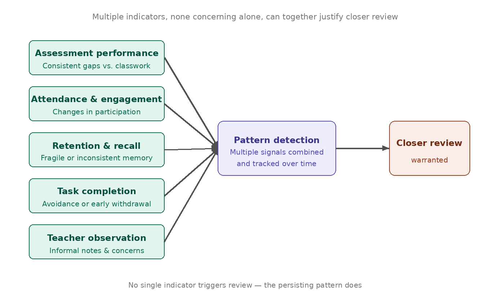
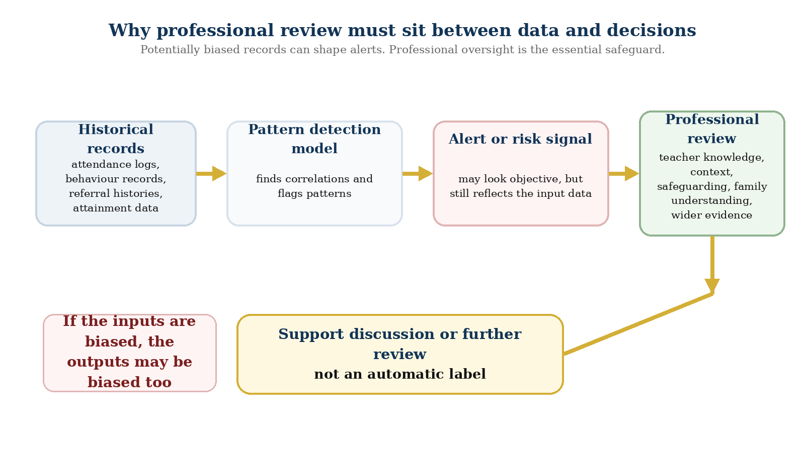

The second in a four-part series exploring how school assessment data in England should be interpreted carefully, contextually, and with professional judgement.
Data science may help schools identify emerging patterns of need earlier by combining multiple indicators more systematically, but its value depends entirely on careful interpretation, ethical design, and professional oversight. Used well, it sharpens the questions professionals ask. Used carelessly, it risks reducing children to risk scores that carry the biases of the systems that produced them.
In many primary classrooms, the early signs of learning difficulty do not appear all at once. They emerge through small, uneven patterns such as inconsistent progress, repeated misconceptions, fragile retention, changes in engagement, or growing task avoidance. The challenge is that these signals are often gradual, fragmented, and easy to miss when they are spread across different moments, tasks, and records.
This difficulty is shaped by the realities of classroom life. In England, the average state-funded primary class size is now around 26 to 27 pupils, which means that a single teacher is often teaching, observing, responding to behaviour, adapting explanations, checking understanding, and making in-the-moment decisions for a large group simultaneously. In the early stages, much of this work relies on professional judgement, memory, and informal notes. Some patterns are obvious. Others are not.
That is not a weakness in teachers; it is a feature of a complex environment. Early career teachers may have had less exposure to certain patterns of difficulty, while even experienced teachers can find that less visible combinations of need are overshadowed by pupils whose difficulties are more immediately apparent. The result is that some pupils may remain categorised as broadly average even when their pattern of learning suggests that closer review may be warranted. Kovanovic, Mazziotti and Lodge (2021) note that the growing availability of educational data creates real opportunities for supporting students and understanding learning progress in pre-university contexts, but that realising those opportunities requires careful design and sustained professional engagement.
In this context, data science does not need to mean fully automated decision-making or technical systems that make judgements in place of teachers. At its most useful, it means bringing multiple indicators together more systematically so that patterns can be seen more clearly over time. Rather than relying on one score, one lesson, or one moment of concern, a data-informed approach might combine information on assessment performance, attendance, engagement, task completion, retention, and teacher observation.
The aim is not diagnosis or automated labelling. The aim is to help schools notice which pupils may benefit from fuller discussion, closer review, or more tailored support. A pupil may look broadly secure when only one measure is considered in isolation. But when several indicators are read together, a different picture may emerge. This is where data science may offer practical value: not by replacing judgement, but by helping to make scattered signals more visible and therefore more open to informed professional enquiry. Foldnes et al. (2024) found that combining process data with screening assessments allowed the identification of at-risk readers with considerably greater accuracy than single-measure approaches, suggesting that multi-indicator models hold genuine promise when implemented thoughtfully in school settings.

In practice, the challenge of early identification is not always that there is no signal. Often, the signal is present but fragmented, gradual, or hidden behind labels such as “average”, “middle-attaining”, or “low effort”. The examples below are illustrative patterns drawn from observations made during school placement, presented in anonymised and slightly generalised form to protect confidentiality. They are included to show how multi-indicator review might work in practice, rather than as diagnostic profiles of individual pupils.
The first example is a pupil generally perceived as a middle-attaining learner. In everyday classwork, she appeared to cope reasonably well and could complete tasks with the level of support typically given to the group. Over time, however, a more uneven pattern emerged. Her in-class assignments were often secure enough, particularly when tasks were scaffolded and teacher guidance was available, but her assessment outcomes were consistently much weaker. Because she was viewed as an average pupil, this discrepancy did not immediately trigger distinct intervention. Her attendance was almost perfect, which may also have reduced the likelihood of concern being raised through routine monitoring. When target questioning was used more deliberately, her responses were often less secure than classwork initially suggested, reinforcing the sense that supported classroom performance was masking weaker independent understanding.
The second example is a pupil whose main difficulty did not present as behaviour, attendance, or refusal to engage, but as unusually fragile memory. He could often understand material in the moment when it was carefully explained and scaffolded, and there was no obvious indication of difficulty in the conventional sense. The pattern became clearer over time because learning seemed unusually fragile: concepts that had appeared secure one day might be lost a day or two later. He also struggled at times to copy accurately from the board, which can seem minor in isolation, but matters when it repeatedly affects a pupil’s ability to retain information, complete tasks independently, or build confidence in written work.
The third example is a pupil whose main pattern was avoidance. When asked to begin or complete work, he would often hesitate, withdraw effort quickly, or give up before making a genuine attempt. On the surface, this might be read simply as low motivation or poor resilience. Yet patterns of avoidance can reflect repeated experiences of difficulty, low academic confidence, fear of failure, or a learned expectation that success is unlikely. If such a pattern is interpreted only as non-compliance, the response may remain behavioural and miss what is actually driving the withdrawal. A more careful reading of the pattern, supported by other indicators, may point towards a need for different forms of support, clearer task structuring, or closer investigation into what underlies the avoidance.
A carefully designed data-informed approach may help schools in at least four interconnected ways, and it is worth considering these as a coherent set rather than a simple list of separate advantages.
The first and most fundamental is earlier recognition: by bringing together signals that would otherwise remain disconnected across different lessons, assessments, and observations, a more systematic approach creates the conditions under which weaker patterns can become visible before they have grown into entrenched difficulties. The second follows directly from this: reduced overreliance on any single measure, whether a test score, an attendance figure, or a teacher’s impression from one day, creates a broader and more reliable basis for professional judgement.
The third concerns prioritisation, which matters particularly in schools where staff capacity is limited and not every concern can be explored with equal depth at the same time. A more systematic view of patterns across indicators helps schools direct attention where it is most needed. The fourth is perhaps the most practically significant: shifting the focus of support conversations from isolated results to patterns over time produces better questions, and better questions lead to better outcomes. Which pupils show repeated inconsistency between scaffolded and independent performance? Where does task completion diverge from assessment outcomes? Which patterns are persistent enough to justify closer review? These are the kinds of questions that improved pattern recognition can support.
Any argument for data science in this area must be approached with considerable caution, and the risks are serious enough to warrant extended discussion rather than a brief acknowledgement. Poor quality data will produce poor quality outputs. Incomplete records, inconsistent teacher entries, narrow indicators, or biased assumptions embedded in the design of a system can all distort what that system appears to show. Correlation is not diagnosis, and a flagged pattern should never be treated as proof that a pupil has a particular need. At most, it should trigger a more careful professional conversation.
The diagram below reflects the central ethical concern in this section: data-informed systems can only be trusted if schools remain alert to the possibility that skewed records, uneven referral histories, or narrow behavioural labels may shape what the system appears to detect.

The risk of reinforcing existing inequality is not theoretical. Baker and Hawn (2021) document how educational algorithms have repeatedly amplified existing disparities along the lines of race, gender, socioeconomic background, and disability. Systems trained on historical data inherit the assumptions embedded in that history. If past referral patterns, behaviour records, or attainment expectations already reflect unequal treatment, any predictive model built on that data risks reproducing those distortions in a form that appears more objective than it actually is. Pupils should not be reduced to risk scores, and schools should be critical of any tool that presents itself as neutral while encoding questionable assumptions in its design.
For this reason, the role of professional judgement remains central and non-negotiable. Data-informed systems are most defensible when they function as prompts for enquiry rather than mechanisms for labelling. Their purpose should be to widen attention, not narrow it; to support thoughtful review, not replace human interpretation; and to help schools ask better questions about what support may be needed. Pardo and Siemens (2014) argue that ethical learning analytics requires informed consent, respect for privacy, and transparent explanation of how data is being used. In a primary school context, where children and families may have limited understanding of how their data is being processed, these obligations are especially important.
The case for data science in primary education is therefore not that it can identify need automatically, but that it may help schools notice patterns earlier and more systematically than isolated indicators allow. Used carefully and with genuine professional oversight, it can strengthen the basis for discussion and support better-targeted follow-up. Used carelessly, it risks oversimplification, false confidence, and unfair labelling of the children who are already least well served by existing systems.
That leads directly to the next question in this series. If data can make patterns more visible, who should interpret those patterns, how should they be understood, and what kind of professional knowledge should guide the response? Article 3 turns to that question by examining why teacher judgement remains not only relevant but irreplaceable in data-informed education.
Baker, R.S. and Hawn, A. (2021) ‘Algorithmic bias in education’, International Journal of Artificial Intelligence in Education, 32(4), pp. 1052–1092. doi: 10.1007/s40593-021-00285-9.
Department for Education (2025) School pupils and their characteristics. Average class size in state-funded primary schools. Available at: https://explore-education-statistics.service.gov.uk/
Foldnes, N., Uppstad, P.H., Grønneberg, S. and Thomson, J.M. (2024) ‘School entry detection of struggling readers using gameplay data and machine learning’, Frontiers in Education, 9, 1487694. doi: 10.3389/feduc.2024.1487694.
Khalil, M., Slade, S. and Prinsloo, P. (2024) ‘Learning analytics in support of inclusiveness and disabled students: a systematic review’, Journal of Computing in Higher Education, 36(1), pp. 202–219. doi: 10.1007/s12528-023-09363-4.
Kovanovic, V., Mazziotti, C. and Lodge, J. (2021) ‘Learning analytics for primary and secondary schools’, Journal of Learning Analytics, 8(2), pp. 1–5. doi: 10.18608/jla.2021.7543.
Pardo, A. and Siemens, G. (2014) ‘Ethical and privacy principles for learning analytics’, British Journal of Educational Technology, 45(3), pp. 438–450. doi: 10.1111/bjet.12152.
Vieira, C., Parsons, P. and Byrd, V. (2024) ‘A review of learning analytics opportunities and challenges for K-12 education’, Heliyon, 10(4), e26219. doi: 10.1016/j.heliyon.2024.e26219.